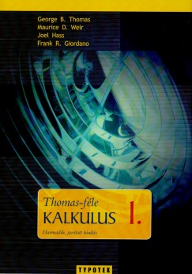

| Kezdőlap Matematika Analízis I. Programozás alapjai Programtervezési ismeretek | |||
|
Matematika Analízis I. Matematika Analízis I. egyetemi kurzus az alapvető matematikai elvek és módszerek széles körét fedező alaptémákat tárgyalja. A kurzus során a diákok mélyebb megértést szereznek a matematikai elemzés alapjairól és alkalmazásaikról. Az első részben a komplex számokat tanulmányozzák, majd áttérnek a polinomokra, vektorokra és egyenletekre, különös hangsúlyt fektetve a síkgeometriai alkalmazásokra. A halmazok, rendezett párok és leképezések témaköre bevezeti a diákokat az absztraktabb matematikai struktúrák világába. A matematikai logika segítségével a diákok tanulják meg a pontos és precíz gondolkodást. A függvények, összetett függvények és inverz függvények elemzése a matematikai modellezés és problémamegoldás szempontjából kulcsfontosságú. A sorozatok és határértékük, valamint a küszöbindex és monotonitás vizsgálata szerves részét képezik a differenciál- és integrálszámítás előkészítésének. A rekurzív sorozatok, sorok és a függvények határértéke és folytonossága további mélyebb megértést kínálnak a matematikai struktúrákról és azok tulajdonságairól. A kurzus második felében a differenciál- és integrálszámítás részletesen tárgyalva van, beleértve a könnyű függvényvizsgálatot, szélsőértékfeladatokat, teljes függvényvizsgálatot, polinomokat és sorokat, valamint az L’Hospital szabály alkalmazását. A határozatlan és határozott integrálás, valamint a kétváltozós függvények és paraméteres görbék befejezik a kurzust, kiterjesztve a diákok matematikai ismereteit és alkalmazási területeit. A gazdasági feladatok pedig a matematika gyakorlati alkalmazását mutatják be, és kapcsolatot teremtenek a kurzus elméleti része és a valós élet között.  Forrás: Bing AI |
|||
| © Készítette: Bán Tamás József QTMKZZ | |||